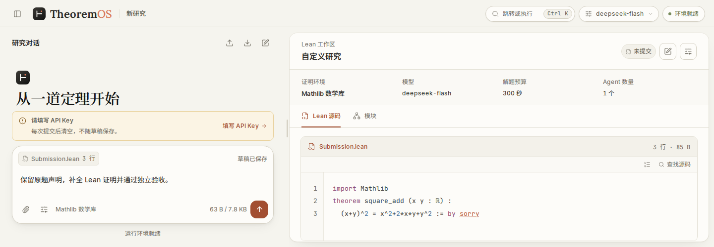
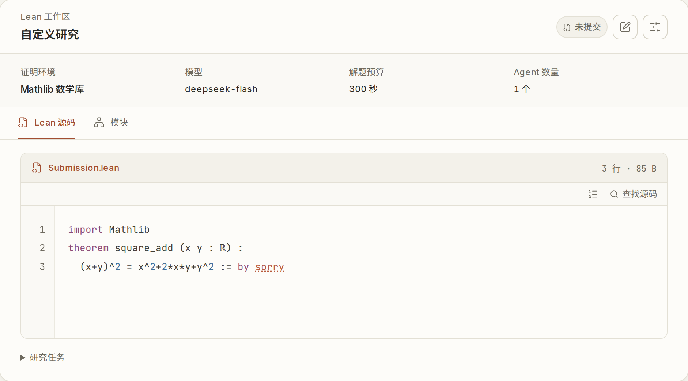
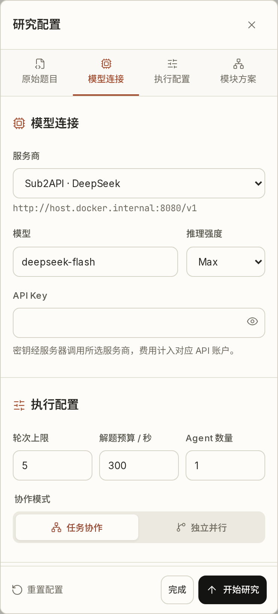
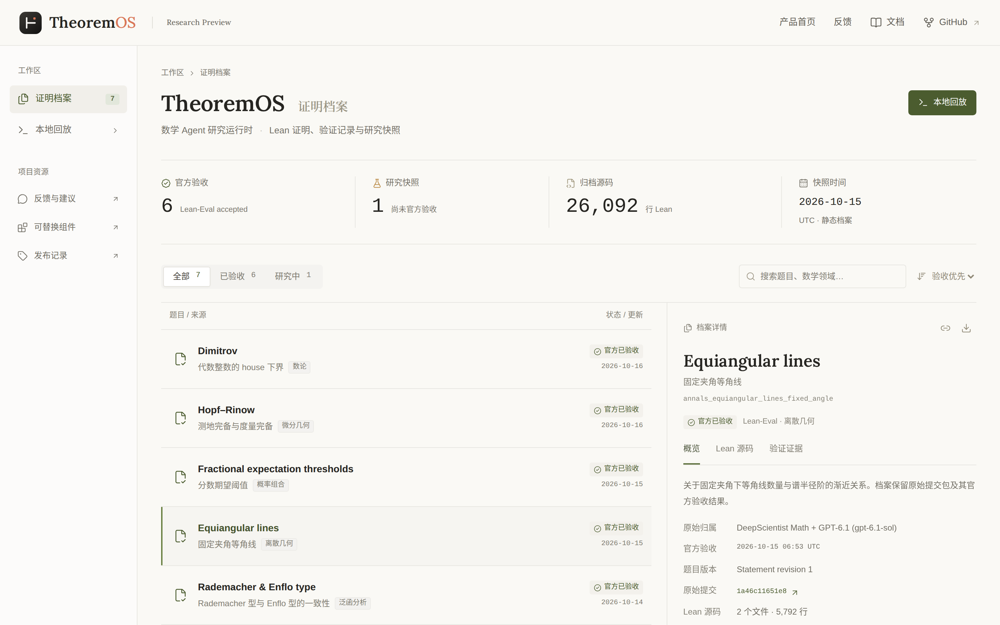

在对话中探索，
在工作区验证。
研究对话与 Lean 工作区同步展开。手机和平板可切换视图，查看原题、源码与检查状态。
从候选，
到独立验收。
一份预设证明的四步回放。源码、检查与修复，连同最终回执一起留存。
查看完整回放记录namespace Tutorialtheorem add_zero (n : Nat) : n + 0 = n := by rfltheorem zero_add (n : Nat) : 0 + n = n := by rflend Tutorial一处通过，
一处还需继续。
add_zero 可由 rfl 完成；zero_add 需要已有引理。
n : Nat
⊢ 0 + n = n下一份候选使用 Nat.zero_add n。
namespace Tutorialtheorem add_zero (n : Nat) : n + 0 = n := by rfltheorem zero_add (n : Nat) : 0 + n = n := by exact Nat.zero_add nend Tutorialnamespace Tutorialtheorem add_zero (n : Nat) : n + 0 = n := by rfltheorem zero_add (n : Nat) : 0 + n = n := by exact Nat.zero_add nend Tutorial研究成果，
有据可查。
| 题目与原始研究记录 | 研究领域 | 验收与证据 |
|---|---|---|
Dimitrov代数整数的 house 下界 DeepScientist Math + GPT-6.1 (gpt-6.1-sol) |
数论 | 官方通过 |
Hopf–Rinow测地完备与度量完备 DeepScientist Math + GPT-6.1 (gpt-6.1-sol) |
微分几何 | 官方通过 |
Fractional expectation thresholds分数期望阈值 DeepScientist Math + GPT-6.1 (gpt-6.1-sol) |
概率组合 | 官方通过 |
Equiangular lines固定夹角等角线 DeepScientist Math + GPT-6.1 (gpt-6.1-sol) |
离散几何 | 官方通过 |
Rademacher & Enflo typeRademacher 型与 Enflo 型的一致性 DeepScientist Math + GPT-6.1 (gpt-6.1-sol) |
泛函分析 | 官方通过 |
Unit conjecture群环单位猜想 DeepScientist + GPT-5.6 |
代数 | 官方通过 |
成果来自前身 DeepScientist / DeepScientist Math 及后续工作，包含继续运行与环境迁移。原始归属、官方结果与源码见各题档案。
五种决策，
组合研究。
固定题目、环境、模型与预算，替换一类研究决策。五个研究组件，支持单 Agent 与多 Agent 对照研究。
让下一步，有章可循。
选择就绪任务，决定继续、重试或停止。把任务排序与路线、预算约束放在一起研究。
- 输入
- 研究状态 · 候选操作 · 共享预算
- 输出
- 下一步操作 · 有序就绪任务
M3 · 搜索接口
让研究过程，
看得见。
从原题、模型配置到最终档案，每一处画面都来自实际运行的产品。
打开证明档案
原题与源码，同步查看。
选择 Lean 标准库或固定 Mathlib 环境，在右侧工作区检查候选与诊断。这张截图为未提交草稿。

连接自己的模型。
支持 OpenAI 及兼容 Responses API 的服务。API Key 不写入浏览器存储。

开始你的
下一次研究。
在线工作台即将开放。
提交内测申请，开放时我们会在同一条 Issue 里回复你。
GitHub 申请会公开显示，请勿填写 API Key、邮箱等个人信息。
evaluated_passed 为验收结论开始之前。
怎么申请内测？
在 GitHub 提交内测申请，说明研究用途和想做的题目。开放时我们会在同一条 Issue 里回复你。申请内容会公开显示，请勿填写 API Key、邮箱等个人信息。
适合用来做什么？
面向数学 Agent 研究者和 Lean 开发者，用于构造证明、比较搜索与协作方法，以及复盘研究实验。当前为研究预览版本。
可以直接在网页运行证明吗？
在线工作台即将开放。开放后可以在浏览器中提交 Lean 与 Mathlib 原题、输入自己的 API Key 并查看验收结果。当前站点包含界面截图、预设回放和证明档案。
支持哪类 API Key？
在线工作台支持 OpenAI 及兼容 Responses API 的服务。模型研究会产生服务商对应的用量；站点上的预设回放不调用模型，也不需要 API Key。
网页工作台会保存研究记录吗？
运行记录临时保存在服务内存，可下载源码与报告；服务重启或会话到期后记录清空。网页草稿在当前标签页保存，API Key 不写入浏览器存储。